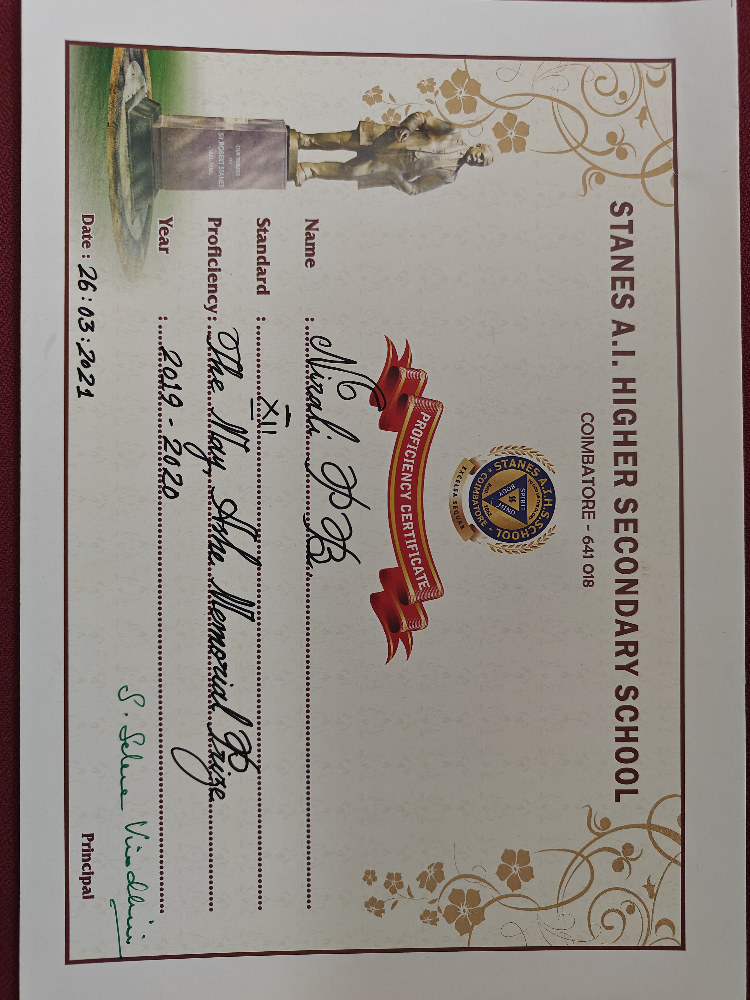
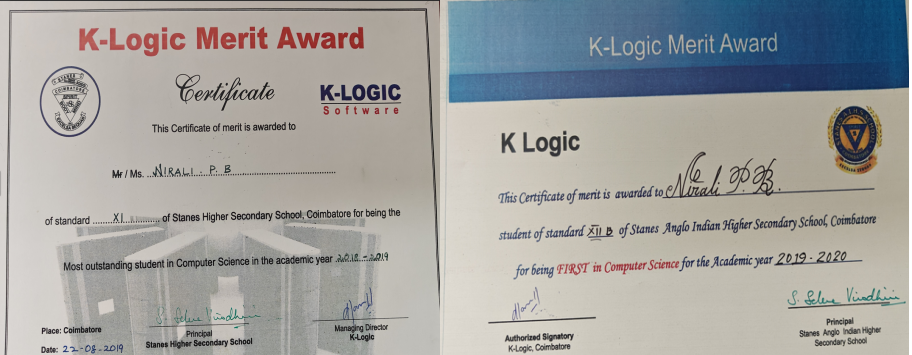
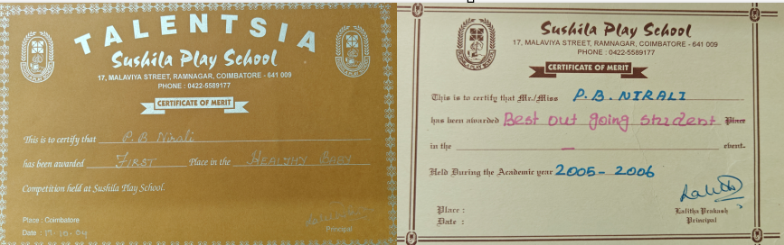
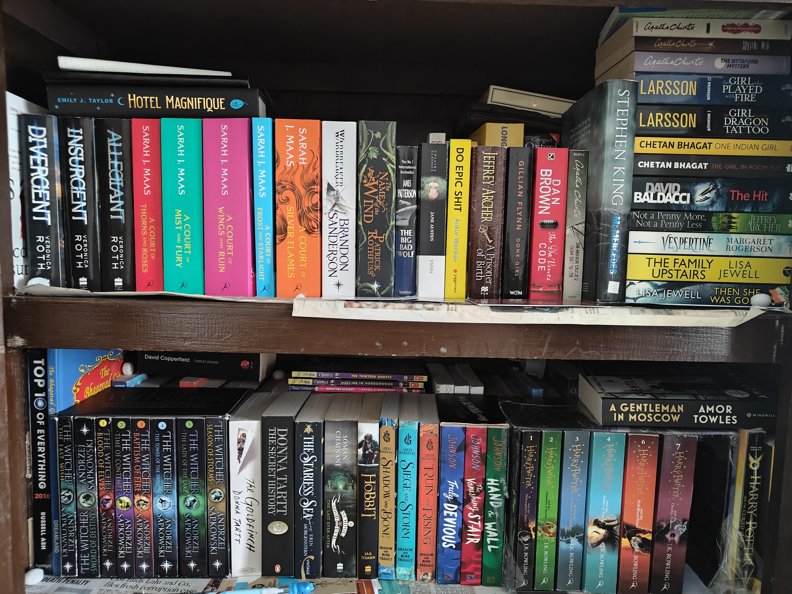

Awards & Hobbies
May Ashe Memorial
I am honored to have received the Best Outgoing Student of the Year Award in 2020 at Stanes Anglo Indian Higher Secondary School. This recognition reflects my dedication and achievements during that academic year.
My Dance Endeavors

My passion for dance led me to participate in the state-level dance competition, where I was honored by Dr. APJ Abdul Kalam for achieving first place in the Tamil Nadu State competition.
Journey to take Computer Science
My passion for computer science began in school, where I excelled in subjects like Computer Science, Mathematics, and Physics. These subjects not only captured my interest but also laid the foundation for my academic journey. In the realm of Computer Science, I discovered a field that fueled my curiosity and ignited a love for problem-solving.
Best baby Award
Receiving the Best Baby Award at the age of two marked a delightful milestone in my early years. This early acknowledgment hinted at the distinctive qualities and endearing charm that have since become integral aspects of my personality and life journey. The recognition not only brought joy to my family but also foreshadowed the uniqueness that would continue to unfold as I grew and embarked on the fascinating journey of self-discovery.
Reading!
I am an avid reader with a passion for immersing myself in the world of literature, particularly drawn to genres like crime, mystery, thriller, and fantasy. My reading journey is enriched by the captivating narratives and intricate plots found in these genres. Among my favorite authors, John Grisham and David Baldacci stand out, their storytelling prowess consistently delivering gripping tales that keep me eagerly turning the pages. Exploring the realms of mystery and fantasy, their works have become a cherished escape, providing not only entertainment but also a source of inspiration for my own imagination. The power of a well-crafted story, woven with suspense and intrigue, continues to fuel my love for reading, making each literary adventure a thrilling experience.